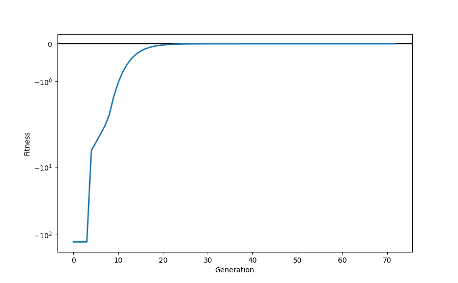

<!DOCTYPE html>
<html class="writer-html5" lang="en" >
<head>
  <meta charset="utf-8" />
  
  <meta name="viewport" content="width=device-width, initial-scale=1.0" />
  
  <title>Example for evolutionary regression with parametrized nodes &mdash; hal-cgp 0.2.0 documentation</title>
  

  
  <link rel="stylesheet" href="../_static/css/msmb.css" type="text/css" />
  <link rel="stylesheet" href="../_static/pygments.css" type="text/css" />
  <link rel="stylesheet" href="../_static/gallery.css" type="text/css" />
  <link rel="stylesheet" href="../_static/gallery-binder.css" type="text/css" />
  <link rel="stylesheet" href="../_static/gallery-dataframe.css" type="text/css" />
  <link rel="stylesheet" href="../_static/gallery-rendered-html.css" type="text/css" />

  
  

  
  

  

  
  <!--[if lt IE 9]>
    <script src="../_static/js/html5shiv.min.js"></script>
  <![endif]-->
  
    
      <script type="text/javascript" id="documentation_options" data-url_root="../" src="../_static/documentation_options.js"></script>
        <script src="../_static/jquery.js"></script>
        <script src="../_static/underscore.js"></script>
        <script src="../_static/doctools.js"></script>
        <script src="../_static/language_data.js"></script>
        <script src="../_static/js/versions.js"></script>
    
    <script type="text/javascript" src="../_static/js/theme.js"></script>

    
    <link rel="index" title="Index" href="../genindex.html" />
    <link rel="search" title="Search" href="../search.html" />
    <link rel="next" title="Example for differential evolutionary regression" href="example_differential_evo_regression.html" />
    <link rel="prev" title="Example for evolutionary regression on a piecewise target function" href="example_piecewise_target_function.html" /> 
</head>

<body class="wy-body-for-nav">

   
  <div class="wy-grid-for-nav">
    
    <nav data-toggle="wy-nav-shift" class="wy-nav-side">
      <div class="wy-side-scroll">
        <div class="wy-side-nav-search" >
          

          
            <a href="../index.html" class="icon icon-home"> hal-cgp
          

          
          </a>

          
            
            
          

          
<div role="search">
  <form id="rtd-search-form" class="wy-form" action="../search.html" method="get">
    <input type="text" name="q" placeholder="Search docs" />
    <input type="hidden" name="check_keywords" value="yes" />
    <input type="hidden" name="area" value="default" />
  </form>
</div>

          
        </div>

        
        <div class="wy-menu wy-menu-vertical" data-spy="affix" role="navigation" aria-label="main navigation">
          
            
            
              
            
            
              <ul class="current">
<li class="toctree-l1"><a class="reference internal" href="../installation.html">Installation</a></li>
<li class="toctree-l1"><a class="reference internal" href="../basic_usage.html">Basic usage</a></li>
<li class="toctree-l1"><a class="reference internal" href="../documentation/documentation.html">Documentation</a></li>
<li class="toctree-l1 current"><a class="reference internal" href="index.html">Examples</a><ul class="current">
<li class="toctree-l2"><a class="reference internal" href="example_caching.html">Example demonstrating the use of the caching decorator.</a></li>
<li class="toctree-l2"><a class="reference internal" href="example_fec_caching.html">Example demonstrating the use of the caching decorator with functional equivalance checking</a></li>
<li class="toctree-l2"><a class="reference internal" href="example_minimal.html">Minimal example for evolutionary regression</a></li>
<li class="toctree-l2"><a class="reference internal" href="example_multi_genome.html">Example for evolutionary regression with multiple genomes</a></li>
<li class="toctree-l2"><a class="reference internal" href="example_reorder.html">Example for evolutionary regression with genome reordering</a></li>
<li class="toctree-l2"><a class="reference internal" href="example_hurdles.html">Minimal example for evolutionary regression using hurdles</a></li>
<li class="toctree-l2"><a class="reference internal" href="example_piecewise_target_function.html">Example for evolutionary regression on a piecewise target function</a></li>
<li class="toctree-l2 current"><a class="current reference internal" href="#">Example for evolutionary regression with parametrized nodes</a></li>
<li class="toctree-l2"><a class="reference internal" href="example_differential_evo_regression.html">Example for differential evolutionary regression</a></li>
<li class="toctree-l2"><a class="reference internal" href="example_evo_regression.html">Example for evolutionary regression</a></li>
<li class="toctree-l2"><a class="reference internal" href="example_mountain_car.html">Example: Solving an OpenAI Gym environment with CGP.</a></li>
</ul>
</li>
<li class="toctree-l1"><a class="reference internal" href="../api_reference/api_reference.html">API reference</a></li>
<li class="toctree-l1"><a class="reference internal" href="../references.html">References</a></li>
<li class="toctree-l1"><a class="reference internal" href="../citation.html">Citation</a></li>
</ul>

            
          
        </div>
        
      </div>
    </nav>

    <section data-toggle="wy-nav-shift" class="wy-nav-content-wrap">

      
      <nav class="wy-nav-top" aria-label="top navigation">
        
          <i data-toggle="wy-nav-top" class="fa fa-bars"></i>
          <a href="../index.html">hal-cgp</a>
        
      </nav>


      <div class="wy-nav-content">
        
        <div class="rst-content">
        
          


<div role="navigation" aria-label="breadcrumbs navigation">

  <ul class="wy-breadcrumbs">
    
      <li><a href="../index.html" class="icon icon-home"></a> &raquo;</li>
        
          <li><a href="index.html">Examples</a> &raquo;</li>
        
      <li>Example for evolutionary regression with parametrized nodes</li>
    
    
      <li class="wy-breadcrumbs-aside">
        
          
            <a href="../_sources/auto_examples/example_parametrized_nodes.rst.txt" rel="nofollow"> View page source</a>
          
        
      </li>
    
  </ul>

  
  <hr/>
</div>
          <div role="main" class="document" itemscope="itemscope" itemtype="http://schema.org/Article">
           <div itemprop="articleBody">
            
  <div class="sphx-glr-download-link-note admonition note">
<p class="admonition-title">Note</p>
<p>Click <a class="reference internal" href="#sphx-glr-download-auto-examples-example-parametrized-nodes-py"><span class="std std-ref">here</span></a>
to download the full example code</p>
</div>
<div class="sphx-glr-example-title section" id="example-for-evolutionary-regression-with-parametrized-nodes">
<span id="sphx-glr-auto-examples-example-parametrized-nodes-py"></span><h1>Example for evolutionary regression with parametrized nodes<a class="headerlink" href="#example-for-evolutionary-regression-with-parametrized-nodes" title="Permalink to this headline">¶</a></h1>
<p>Example demonstrating the use of Cartesian genetic programming for a
regression task that requires fine tuning of constants in parametrized
nodes. This is achieved by introducing a new node, “ParametrizedAdd”
which produces a scaled and shifted version of the sum of its inputs.</p>
<div class="highlight-default notranslate"><div class="highlight"><pre><span></span><span class="c1"># The docopt str is added explicitly to ensure compatibility with</span>
<span class="c1"># sphinx-gallery.</span>
<span class="n">docopt_str</span> <span class="o">=</span> <span class="s2">&quot;&quot;&quot;</span>
<span class="s2">  Usage:</span>
<span class="s2">    example_parametrized_nodes.py [--max-generations=&lt;N&gt;]</span>

<span class="s2">  Options:</span>
<span class="s2">    -h --help</span>
<span class="s2">    --max-generations=&lt;N&gt;  Maximum number of generations [default: 500]</span>
<span class="s2">&quot;&quot;&quot;</span>

<span class="kn">import</span> <span class="nn">functools</span>
<span class="kn">import</span> <span class="nn">math</span>

<span class="kn">import</span> <span class="nn">matplotlib.pyplot</span> <span class="k">as</span> <span class="nn">plt</span>
<span class="kn">import</span> <span class="nn">numpy</span> <span class="k">as</span> <span class="nn">np</span>
<span class="kn">import</span> <span class="nn">scipy.constants</span>
<span class="kn">import</span> <span class="nn">torch</span>
<span class="kn">from</span> <span class="nn">docopt</span> <span class="kn">import</span> <span class="n">docopt</span>

<span class="kn">import</span> <span class="nn">cgp</span>

<span class="n">args</span> <span class="o">=</span> <span class="n">docopt</span><span class="p">(</span><span class="n">docopt_str</span><span class="p">)</span>
</pre></div>
</div>
<p>We first define a new node that adds the values of its two inputs then scales and
finally shifts the result. The scale (“w”) and shift factors (“b”)
are parameters that are adapted by local search. We need to define
the arity of the node, callables for the initial values for the
parameters and the operation of the node as a string. In this string
parameters are enclosed in angle brackets, inputs are denoted by “x_i”
with i representing their corresponding index.</p>
<div class="highlight-default notranslate"><div class="highlight"><pre><span></span><span class="k">class</span> <span class="nc">ParametrizedAdd</span><span class="p">(</span><span class="n">cgp</span><span class="o">.</span><span class="n">OperatorNode</span><span class="p">):</span>
    <span class="sd">&quot;&quot;&quot;A node that adds its two inputs.</span>

<span class="sd">    The result of addition is scaled by w and shifted by b. Both these</span>
<span class="sd">    parameters can be adapted via local search are passed on from</span>
<span class="sd">    parents to their offspring.</span>

<span class="sd">    &quot;&quot;&quot;</span>

    <span class="n">_arity</span> <span class="o">=</span> <span class="mi">2</span>
    <span class="n">_initial_values</span> <span class="o">=</span> <span class="p">{</span><span class="s2">&quot;&lt;w&gt;&quot;</span><span class="p">:</span> <span class="k">lambda</span><span class="p">:</span> <span class="mf">1.0</span><span class="p">,</span> <span class="s2">&quot;&lt;b&gt;&quot;</span><span class="p">:</span> <span class="k">lambda</span><span class="p">:</span> <span class="mf">0.0</span><span class="p">}</span>
    <span class="n">_def_output</span> <span class="o">=</span> <span class="s2">&quot;&lt;w&gt; * (x_0 + x_1) + &lt;b&gt;&quot;</span>
</pre></div>
</div>
<p>We define a target function which contains numerical constants that
are not available as constants for the search and need to be found
by local search on parameterized nodes.</p>
<div class="highlight-default notranslate"><div class="highlight"><pre><span></span><span class="k">def</span> <span class="nf">f_target</span><span class="p">(</span><span class="n">x</span><span class="p">):</span>
    <span class="k">return</span> <span class="n">math</span><span class="o">.</span><span class="n">pi</span> <span class="o">*</span> <span class="p">(</span><span class="n">x</span><span class="p">[:,</span> <span class="mi">0</span><span class="p">]</span> <span class="o">+</span> <span class="n">x</span><span class="p">[:,</span> <span class="mi">1</span><span class="p">])</span> <span class="o">+</span> <span class="n">math</span><span class="o">.</span><span class="n">e</span>
</pre></div>
</div>
<p>Then we define a differentiable(!) inner objective function for the
evolution. This function accepts a torch class as a parameter. It
returns the mean-squared error between the output of the forward
pass of this class and the target function evaluated on a set of
random points. This inner objective is then used by actual objective
function to determine the fitness of the individual.</p>
<div class="highlight-default notranslate"><div class="highlight"><pre><span></span><span class="k">def</span> <span class="nf">inner_objective</span><span class="p">(</span><span class="n">f</span><span class="p">,</span> <span class="n">seed</span><span class="p">):</span>
    <span class="n">torch</span><span class="o">.</span><span class="n">manual_seed</span><span class="p">(</span><span class="n">seed</span><span class="p">)</span>
    <span class="n">batch_size</span> <span class="o">=</span> <span class="mi">500</span>
    <span class="n">x</span> <span class="o">=</span> <span class="n">torch</span><span class="o">.</span><span class="n">DoubleTensor</span><span class="p">(</span><span class="n">batch_size</span><span class="p">,</span> <span class="mi">2</span><span class="p">)</span><span class="o">.</span><span class="n">uniform_</span><span class="p">(</span><span class="o">-</span><span class="mi">5</span><span class="p">,</span> <span class="mi">5</span><span class="p">)</span>
    <span class="n">y</span> <span class="o">=</span> <span class="n">f</span><span class="p">(</span><span class="n">x</span><span class="p">)</span>
    <span class="k">return</span> <span class="n">torch</span><span class="o">.</span><span class="n">nn</span><span class="o">.</span><span class="n">MSELoss</span><span class="p">()(</span><span class="n">f_target</span><span class="p">(</span><span class="n">x</span><span class="p">),</span> <span class="n">y</span><span class="p">[:,</span> <span class="mi">0</span><span class="p">])</span>


<span class="k">def</span> <span class="nf">objective</span><span class="p">(</span><span class="n">individual</span><span class="p">,</span> <span class="n">seed</span><span class="p">):</span>
    <span class="k">if</span> <span class="ow">not</span> <span class="n">individual</span><span class="o">.</span><span class="n">fitness_is_None</span><span class="p">():</span>
        <span class="k">return</span> <span class="n">individual</span>

    <span class="n">f</span> <span class="o">=</span> <span class="n">individual</span><span class="o">.</span><span class="n">to_torch</span><span class="p">()</span>
    <span class="n">loss</span> <span class="o">=</span> <span class="n">inner_objective</span><span class="p">(</span><span class="n">f</span><span class="p">,</span> <span class="n">seed</span><span class="p">)</span>
    <span class="n">individual</span><span class="o">.</span><span class="n">fitness</span> <span class="o">=</span> <span class="o">-</span><span class="n">loss</span><span class="o">.</span><span class="n">item</span><span class="p">()</span>

    <span class="k">return</span> <span class="n">individual</span>
</pre></div>
</div>
<p>Next, we define the parameters for the population, the genome of
individuals, the evolutionary algorithm, and the local search. Note
that we add the custom node defined above as a primitive.</p>
<div class="highlight-default notranslate"><div class="highlight"><pre><span></span><span class="n">population_params</span> <span class="o">=</span> <span class="p">{</span><span class="s2">&quot;n_parents&quot;</span><span class="p">:</span> <span class="mi">1</span><span class="p">,</span> <span class="s2">&quot;seed&quot;</span><span class="p">:</span> <span class="mi">818821</span><span class="p">}</span>

<span class="n">genome_params</span> <span class="o">=</span> <span class="p">{</span>
    <span class="s2">&quot;n_inputs&quot;</span><span class="p">:</span> <span class="mi">2</span><span class="p">,</span>
    <span class="s2">&quot;n_outputs&quot;</span><span class="p">:</span> <span class="mi">1</span><span class="p">,</span>
    <span class="s2">&quot;n_columns&quot;</span><span class="p">:</span> <span class="mi">5</span><span class="p">,</span>
    <span class="s2">&quot;n_rows&quot;</span><span class="p">:</span> <span class="mi">1</span><span class="p">,</span>
    <span class="s2">&quot;levels_back&quot;</span><span class="p">:</span> <span class="kc">None</span><span class="p">,</span>
    <span class="s2">&quot;primitives&quot;</span><span class="p">:</span> <span class="p">(</span><span class="n">ParametrizedAdd</span><span class="p">,</span> <span class="n">cgp</span><span class="o">.</span><span class="n">Add</span><span class="p">,</span> <span class="n">cgp</span><span class="o">.</span><span class="n">Sub</span><span class="p">,</span> <span class="n">cgp</span><span class="o">.</span><span class="n">Mul</span><span class="p">),</span>
<span class="p">}</span>

<span class="n">ea_params</span> <span class="o">=</span> <span class="p">{</span><span class="s2">&quot;n_offsprings&quot;</span><span class="p">:</span> <span class="mi">4</span><span class="p">,</span> <span class="s2">&quot;tournament_size&quot;</span><span class="p">:</span> <span class="mi">1</span><span class="p">,</span> <span class="s2">&quot;mutation_rate&quot;</span><span class="p">:</span> <span class="mf">0.04</span><span class="p">,</span> <span class="s2">&quot;n_processes&quot;</span><span class="p">:</span> <span class="mi">2</span><span class="p">}</span>

<span class="n">evolve_params</span> <span class="o">=</span> <span class="p">{</span><span class="s2">&quot;max_generations&quot;</span><span class="p">:</span> <span class="nb">int</span><span class="p">(</span><span class="n">args</span><span class="p">[</span><span class="s2">&quot;--max-generations&quot;</span><span class="p">]),</span> <span class="s2">&quot;min_fitness&quot;</span><span class="p">:</span> <span class="mf">0.0</span><span class="p">}</span>

<span class="n">local_search_params</span> <span class="o">=</span> <span class="p">{</span><span class="s2">&quot;lr&quot;</span><span class="p">:</span> <span class="mf">1e-3</span><span class="p">,</span> <span class="s2">&quot;gradient_steps&quot;</span><span class="p">:</span> <span class="mi">9</span><span class="p">}</span>
</pre></div>
</div>
<p>We then create a Population instance and instantiate the local search
and evolutionary algorithm.</p>
<div class="highlight-default notranslate"><div class="highlight"><pre><span></span><span class="n">pop</span> <span class="o">=</span> <span class="n">cgp</span><span class="o">.</span><span class="n">Population</span><span class="p">(</span><span class="o">**</span><span class="n">population_params</span><span class="p">,</span> <span class="n">genome_params</span><span class="o">=</span><span class="n">genome_params</span><span class="p">)</span>

<span class="n">local_search</span> <span class="o">=</span> <span class="n">functools</span><span class="o">.</span><span class="n">partial</span><span class="p">(</span>
    <span class="n">cgp</span><span class="o">.</span><span class="n">local_search</span><span class="o">.</span><span class="n">gradient_based</span><span class="p">,</span>
    <span class="n">objective</span><span class="o">=</span><span class="n">functools</span><span class="o">.</span><span class="n">partial</span><span class="p">(</span><span class="n">inner_objective</span><span class="p">,</span> <span class="n">seed</span><span class="o">=</span><span class="n">population_params</span><span class="p">[</span><span class="s2">&quot;seed&quot;</span><span class="p">]),</span>
    <span class="o">**</span><span class="n">local_search_params</span><span class="p">,</span>
<span class="p">)</span>

<span class="n">ea</span> <span class="o">=</span> <span class="n">cgp</span><span class="o">.</span><span class="n">ea</span><span class="o">.</span><span class="n">MuPlusLambda</span><span class="p">(</span><span class="o">**</span><span class="n">ea_params</span><span class="p">,</span> <span class="n">local_search</span><span class="o">=</span><span class="n">local_search</span><span class="p">)</span>
</pre></div>
</div>
<p>We define a recording callback closure for bookkeeping of the progression of the evolution.</p>
<div class="highlight-default notranslate"><div class="highlight"><pre><span></span><span class="n">history</span> <span class="o">=</span> <span class="p">{}</span>
<span class="n">history</span><span class="p">[</span><span class="s2">&quot;fitness_champion&quot;</span><span class="p">]</span> <span class="o">=</span> <span class="p">[]</span>
<span class="n">history</span><span class="p">[</span><span class="s2">&quot;expr_champion&quot;</span><span class="p">]</span> <span class="o">=</span> <span class="p">[]</span>


<span class="k">def</span> <span class="nf">recording_callback</span><span class="p">(</span><span class="n">pop</span><span class="p">):</span>
    <span class="n">history</span><span class="p">[</span><span class="s2">&quot;fitness_champion&quot;</span><span class="p">]</span><span class="o">.</span><span class="n">append</span><span class="p">(</span><span class="n">pop</span><span class="o">.</span><span class="n">champion</span><span class="o">.</span><span class="n">fitness</span><span class="p">)</span>
    <span class="n">history</span><span class="p">[</span><span class="s2">&quot;expr_champion&quot;</span><span class="p">]</span><span class="o">.</span><span class="n">append</span><span class="p">(</span><span class="n">pop</span><span class="o">.</span><span class="n">champion</span><span class="o">.</span><span class="n">to_sympy</span><span class="p">())</span>
</pre></div>
</div>
<p>We fix the seed for the objective function to make sure results are
comparable across individuals and, finally, we call the <cite>evolve</cite>
method to perform the evolutionary search.</p>
<div class="highlight-default notranslate"><div class="highlight"><pre><span></span><span class="n">obj</span> <span class="o">=</span> <span class="n">functools</span><span class="o">.</span><span class="n">partial</span><span class="p">(</span><span class="n">objective</span><span class="p">,</span> <span class="n">seed</span><span class="o">=</span><span class="n">population_params</span><span class="p">[</span><span class="s2">&quot;seed&quot;</span><span class="p">])</span>

<span class="n">cgp</span><span class="o">.</span><span class="n">evolve</span><span class="p">(</span><span class="n">pop</span><span class="p">,</span> <span class="n">obj</span><span class="p">,</span> <span class="n">ea</span><span class="p">,</span> <span class="o">**</span><span class="n">evolve_params</span><span class="p">,</span> <span class="n">print_progress</span><span class="o">=</span><span class="kc">True</span><span class="p">,</span> <span class="n">callback</span><span class="o">=</span><span class="n">recording_callback</span><span class="p">)</span>
</pre></div>
</div>
<p class="sphx-glr-script-out">Out:</p>
<div class="sphx-glr-script-out highlight-none notranslate"><div class="highlight"><pre><span></span>[2/500] max fitness: -127.01931908693929
[3/500] max fitness: -127.01931908693929
[4/500] max fitness: -127.01931908693929
[5/500] max fitness: -5.7621478742860965
[6/500] max fitness: -4.400266790086014
[7/500] max fitness: -3.3439171938076777
[8/500] max fitness: -2.5221616375748344
[9/500] max fitness: -1.886291288388642
[10/500] max fitness: -1.3981594801407393
[11/500] max fitness: -1.027024955717336
[12/500] max fitness: -0.7477863327318205
[13/500] max fitness: -0.5399321058490655
[14/500] max fitness: -0.3868341292604577
[15/500] max fitness: -0.2751900492412008
[16/500] max fitness: -0.19452652473250845
[17/500] max fitness: -0.13673494099465527
[18/500] max fitness: -0.09563997095003499
[19/500] max fitness: -0.06661059705457541
[20/500] max fitness: -0.046222253258311974
[21/500] max fitness: -0.031973909639731866
[22/500] max fitness: -0.02205885115609153
[23/500] max fitness: -0.01518420142810349
[24/500] max fitness: -0.010432247679957566
[25/500] max fitness: -0.007156051160756987
[26/500] max fitness: -0.004902206168242835
[27/500] max fitness: -0.003354500929279119
[28/500] max fitness: -0.0022933114582781846
[29/500] max fitness: -0.0015666233077337203
[30/500] max fitness: -0.0010695205965242655
[31/500] max fitness: -0.0007297666386346675
[32/500] max fitness: -0.0004977239202683268
[33/500] max fitness: -0.00033934028308000566
[34/500] max fitness: -0.00023128736715539105
[35/500] max fitness: -0.0001576015752678627
[36/500] max fitness: -0.00010736927896605433
[37/500] max fitness: -7.313509670770486e-05
[38/500] max fitness: -4.980933852908367e-05
[39/500] max fitness: -3.391918703676957e-05
[40/500] max fitness: -2.3096096228535896e-05
[41/500] max fitness: -1.5725246069023054e-05
[42/500] max fitness: -1.0706019354335675e-05
[43/500] max fitness: -7.288451067003709e-06
[44/500] max fitness: -4.961616392292634e-06
[45/500] max fitness: -3.3774988989541173e-06
[46/500] max fitness: -2.2990801926213286e-06
[47/500] max fitness: -1.564956210506372e-06
[48/500] max fitness: -1.0652249266356427e-06
[49/500] max fitness: -7.25058544542861e-07
[50/500] max fitness: -4.935131658081641e-07
[51/500] max fitness: -3.359072595462748e-07
[52/500] max fitness: -2.2863140927698259e-07
[53/500] max fitness: -1.556141119044658e-07
[54/500] max fitness: -1.059154323848727e-07
[55/500] max fitness: -7.208869798177893e-08
[56/500] max fitness: -4.906515782366229e-08
[57/500] max fitness: -3.33947068058455e-08
[58/500] max fitness: -2.2729022729656698e-08
[59/500] max fitness: -1.5469732821737942e-08
[60/500] max fitness: -1.0528923586553802e-08
[61/500] max fitness: -7.166125354812942e-09
[62/500] max fitness: -4.877353378342053e-09
[63/500] max fitness: -3.31958310056805e-09
[64/500] max fitness: -2.2593444953407397e-09
[65/500] max fitness: -1.5377333234503386e-09
[66/500] max fitness: -1.0465965912643985e-09
[67/500] max fitness: -7.123236680097046e-10
[68/500] max fitness: -4.848141005422031e-10
[69/500] max fitness: -3.299688575234535e-10
[70/500] max fitness: -2.2457971871821608e-10
[71/500] max fitness: -1.5285090235237916e-10
[72/500] max fitness: -1.0403162728212182e-10
[73/500] max fitness: -7.080480056918192e-11
</pre></div>
</div>
<p>After the evolutionary search has ended, we print the expression
with the highest fitness and plot the progression of the search.</p>
<div class="highlight-default notranslate"><div class="highlight"><pre><span></span><span class="nb">print</span><span class="p">(</span><span class="sa">f</span><span class="s2">&quot;Final expression </span><span class="si">{</span><span class="n">pop</span><span class="o">.</span><span class="n">champion</span><span class="o">.</span><span class="n">to_sympy</span><span class="p">()[</span><span class="mi">0</span><span class="p">]</span><span class="si">}</span><span class="s2"> with fitness </span><span class="si">{</span><span class="n">pop</span><span class="o">.</span><span class="n">champion</span><span class="o">.</span><span class="n">fitness</span><span class="si">}</span><span class="s2">&quot;</span><span class="p">)</span>

<span class="nb">print</span><span class="p">(</span><span class="s2">&quot;Best performing expression per generation (for fitness increase &gt; 0.5):&quot;</span><span class="p">)</span>
<span class="n">old_fitness</span> <span class="o">=</span> <span class="o">-</span><span class="n">np</span><span class="o">.</span><span class="n">inf</span>
<span class="k">for</span> <span class="n">i</span><span class="p">,</span> <span class="p">(</span><span class="n">fitness</span><span class="p">,</span> <span class="n">expr</span><span class="p">)</span> <span class="ow">in</span> <span class="nb">enumerate</span><span class="p">(</span><span class="nb">zip</span><span class="p">(</span><span class="n">history</span><span class="p">[</span><span class="s2">&quot;fitness_champion&quot;</span><span class="p">],</span> <span class="n">history</span><span class="p">[</span><span class="s2">&quot;expr_champion&quot;</span><span class="p">])):</span>
    <span class="n">delta_fitness</span> <span class="o">=</span> <span class="n">fitness</span> <span class="o">-</span> <span class="n">old_fitness</span>
    <span class="k">if</span> <span class="n">delta_fitness</span> <span class="o">&gt;</span> <span class="mf">0.5</span><span class="p">:</span>
        <span class="nb">print</span><span class="p">(</span><span class="sa">f</span><span class="s2">&quot;</span><span class="si">{</span><span class="n">i</span><span class="si">:</span><span class="s2">3d</span><span class="si">}</span><span class="s2">: </span><span class="si">{</span><span class="n">fitness</span><span class="si">}</span><span class="s2">, </span><span class="si">{</span><span class="n">expr</span><span class="si">}</span><span class="s2">&quot;</span><span class="p">)</span>
        <span class="n">old_fitness</span> <span class="o">=</span> <span class="n">fitness</span>
<span class="nb">print</span><span class="p">(</span><span class="sa">f</span><span class="s2">&quot;</span><span class="si">{</span><span class="n">i</span><span class="si">:</span><span class="s2">3d</span><span class="si">}</span><span class="s2">: </span><span class="si">{</span><span class="n">fitness</span><span class="si">}</span><span class="s2">, </span><span class="si">{</span><span class="n">expr</span><span class="si">}</span><span class="s2">&quot;</span><span class="p">)</span>

<span class="n">width</span> <span class="o">=</span> <span class="mf">9.0</span>

<span class="n">fig</span> <span class="o">=</span> <span class="n">plt</span><span class="o">.</span><span class="n">figure</span><span class="p">(</span><span class="n">figsize</span><span class="o">=</span><span class="p">(</span><span class="n">width</span><span class="p">,</span> <span class="n">width</span> <span class="o">/</span> <span class="n">scipy</span><span class="o">.</span><span class="n">constants</span><span class="o">.</span><span class="n">golden</span><span class="p">))</span>

<span class="n">ax_fitness</span> <span class="o">=</span> <span class="n">fig</span><span class="o">.</span><span class="n">add_subplot</span><span class="p">(</span><span class="mi">111</span><span class="p">)</span>
<span class="n">ax_fitness</span><span class="o">.</span><span class="n">set_xlabel</span><span class="p">(</span><span class="s2">&quot;Generation&quot;</span><span class="p">)</span>
<span class="n">ax_fitness</span><span class="o">.</span><span class="n">set_ylabel</span><span class="p">(</span><span class="s2">&quot;Fitness&quot;</span><span class="p">)</span>
<span class="n">ax_fitness</span><span class="o">.</span><span class="n">set_yscale</span><span class="p">(</span><span class="s2">&quot;symlog&quot;</span><span class="p">)</span>

<span class="n">ax_fitness</span><span class="o">.</span><span class="n">axhline</span><span class="p">(</span><span class="mf">0.0</span><span class="p">,</span> <span class="n">color</span><span class="o">=</span><span class="s2">&quot;k&quot;</span><span class="p">)</span>
<span class="n">ax_fitness</span><span class="o">.</span><span class="n">plot</span><span class="p">(</span><span class="n">history</span><span class="p">[</span><span class="s2">&quot;fitness_champion&quot;</span><span class="p">],</span> <span class="n">lw</span><span class="o">=</span><span class="mi">2</span><span class="p">)</span>

<span class="n">plt</span><span class="o">.</span><span class="n">savefig</span><span class="p">(</span><span class="s2">&quot;example_parametrized_nodes.pdf&quot;</span><span class="p">,</span> <span class="n">dpi</span><span class="o">=</span><span class="mi">300</span><span class="p">)</span>
</pre></div>
</div>

<p class="sphx-glr-script-out">Out:</p>
<div class="sphx-glr-script-out highlight-none notranslate"><div class="highlight"><pre><span></span>Final expression 3.1415928340353736*x_0 + 3.1415928340353736*x_1 + 2.7182734383513227 with fitness -7.080480056918192e-11
Best performing expression per generation (for fitness increase &gt; 0.5):
  0: -127.01931908693929, [x_1]
  4: -5.7621478742860965, [3.1337934090450837*x_0 + 3.1337934090450837*x_1 + 0.31836625198458554]
  5: -4.400266790086014, [3.1565329832083608*x_0 + 3.1565329832083608*x_1 + 0.62085799830068183]
  6: -3.3439171938076777, [3.15892017999446*x_0 + 3.15892017999446*x_1 + 0.89027846015470884]
  7: -2.5221616375748344, [3.1597540007392134*x_0 + 3.1597540007392134*x_1 + 1.1311091306962316]
  8: -1.886291288388642, [3.1595918340334699*x_0 + 3.1595918340334699*x_1 + 1.3460568187315501]
 10: -1.027024955717336, [3.1575106310584499*x_0 + 3.1575106310584499*x_1 + 1.7062610297769132]
 13: -0.3868341292604577, [3.1529224955139751*x_0 + 3.1529224955139751*x_1 + 2.0975544857381176]
 72: -7.080480056918192e-11, [3.1415928340353736*x_0 + 3.1415928340353736*x_1 + 2.7182734383513227]
</pre></div>
</div>
<p class="sphx-glr-timing"><strong>Total running time of the script:</strong> ( 0 minutes  7.460 seconds)</p>
<div class="sphx-glr-footer class sphx-glr-footer-example docutils container" id="sphx-glr-download-auto-examples-example-parametrized-nodes-py">
<div class="sphx-glr-download sphx-glr-download-python docutils container">
<p><a class="reference download internal" download="" href="../_downloads/1b27ac94862774586a16bbffc94c3333/example_parametrized_nodes.py"><code class="xref download docutils literal notranslate"><span class="pre">Download</span> <span class="pre">Python</span> <span class="pre">source</span> <span class="pre">code:</span> <span class="pre">example_parametrized_nodes.py</span></code></a></p>
</div>
<div class="sphx-glr-download sphx-glr-download-jupyter docutils container">
<p><a class="reference download internal" download="" href="../_downloads/1bfec8f8f453cb5c07542e94bc10604a/example_parametrized_nodes.ipynb"><code class="xref download docutils literal notranslate"><span class="pre">Download</span> <span class="pre">Jupyter</span> <span class="pre">notebook:</span> <span class="pre">example_parametrized_nodes.ipynb</span></code></a></p>
</div>
</div>
<p class="sphx-glr-signature"><a class="reference external" href="https://sphinx-gallery.github.io">Gallery generated by Sphinx-Gallery</a></p>
</div>


           </div>
           
          </div>
          <footer>
    <div class="rst-footer-buttons" role="navigation" aria-label="footer navigation">
        <a href="example_differential_evo_regression.html" class="btn btn-neutral float-right" title="Example for differential evolutionary regression" accesskey="n" rel="next">Next <span class="fa fa-arrow-circle-right" aria-hidden="true"></span></a>
        <a href="example_piecewise_target_function.html" class="btn btn-neutral float-left" title="Example for evolutionary regression on a piecewise target function" accesskey="p" rel="prev"><span class="fa fa-arrow-circle-left" aria-hidden="true"></span> Previous</a>
    </div>

  <hr/>

  <div role="contentinfo">
    <p>
        &#169; Copyright 2020, Happy Algorithms League.

    </p>
  </div> 

</footer>
        </div>
      </div>

    </section>

  </div>
  <script>
    var versions_json_url = ''
</script>

<div class="rst-versions" data-toggle="rst-versions" role="note"
     aria-label="versions">
    <span class="rst-current-version" data-toggle="rst-current-version">
      <span class="fa fa-book"></span>
        0.2.0
      <span class="fa fa-caret-down"></span>
    </span>

    <div class="rst-other-versions">
        <dl id="versionselector">
            <dt>Other Versions</dt>
        </dl>

    </div>
</div>

  <script type="text/javascript">
      jQuery(function () {
          SphinxRtdTheme.Navigation.enable(true);
      });
  </script>

  
  
    
   

</body>
</html>